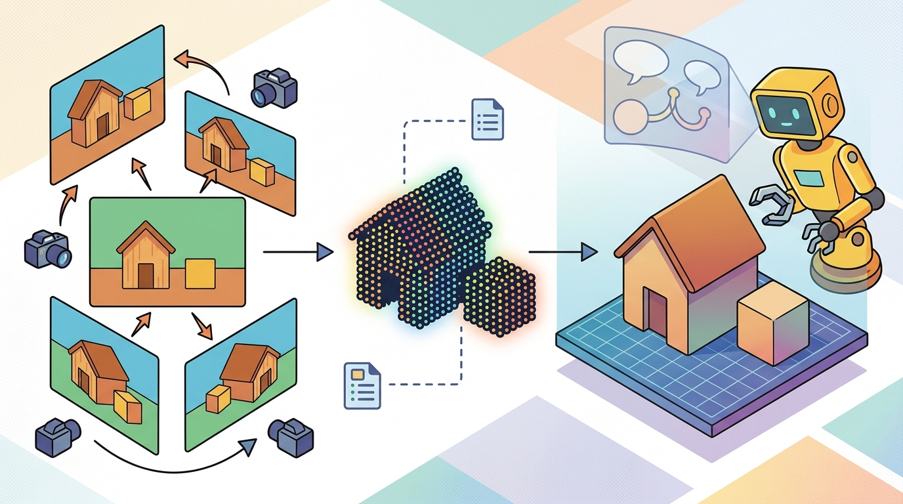

"Perception earns its keep when the next action gets safer, faster, or easier to debug."
A Patient Embodied AI Agent

This section assumes familiarity with implicit neural radiance fields from section 28.5 and occupancy grids from section 28.4, since Gaussian Splatting is best understood in contrast to those representations. The conversion pipeline that bridges splats to planner-safe geometry is examined further in section 28.7, and the idea of editable, explicit scene memory recurs in Part VII alongside manipulation planning and object-centric representations.
A delivery robot enters a cluttered warehouse and, in under two seconds, reconstructs a photorealistic 3D map it can edit on the fly: move a box in the real world and the map updates without retraining. That is what 3D Gaussian Splatting makes possible today. Unlike the opaque, slow-to-query neural fields of the previous section, splat maps are collections of explicit geometric primitives you can inspect, modify, and rasterize at interactive framerates on commodity hardware. For embodied AI, the timing is decisive: robots finally have a scene representation that is both visually rich and surgically editable at runtime. The sections that follow cover how splats are fitted and rasterized, where they excel over implicit alternatives, and exactly what must be added before a splat map can safely answer a collision query.
Problem First: Why This Representation Exists
3D Gaussian Splatting represents a scene as a collection of explicit, differentiable 3D Gaussians, each with a position, covariance, opacity, and appearance. Unlike implicit neural fields, the representation is directly editable: individual splats can be added, removed, or modified without retraining the full model, and the scene can be rasterized in real time on commodity GPUs.
For robotics, the key question is not rendering quality but action fidelity. A splat map must be converted or supplemented before it can answer collision, contact, or clearance queries safely, because Gaussian footprints are rendering primitives, not conservative geometry bounds.
A perception output becomes embodied knowledge only when it can change an admissible action, a recovery choice, or a safety margin. If the same command is issued with and without the representation, the representation is not yet part of the control loop.
Figure 28.6.1 should be read as the 3D Gaussian Splatting: explicit, editable, real-time handoff diagram: sensor evidence, geometric representation, uncertainty, latency, and action consumer are separate failure points.
Mathematical Core
Each splat has a mean, covariance, opacity, and appearance parameters; rendering projects the Gaussian into the image.
$g_i=(\mu_i,\Sigma_i,\alpha_i,\theta_i),\quad w_i(x)\propto \alpha_i\exp\left(-\frac12(x-\pi(\mu_i))^T\Sigma_{i,\mathrm{img}}^{-1}(x-\pi(\mu_i))\right)$
The explicit mean $\mu_i$ and covariance $\Sigma_i$ make splats easier to inspect and edit than a fully implicit field. The projected footprint $w_i$ is still a rendering object, so collision safety requires careful conversion or conservative queries. The scale difference is dramatic. A vanilla NeRF query at 1024x768 requires 50-200 network forward passes per pixel, yielding roughly 0.1 fps on a single GPU (original 2020 formulation). Hash-grid variants such as Instant-NGP reach interactive rates by 2022 but still fall short of splat throughput. A comparable splat map rasterizes the same view in under 10 ms, delivering real-time rendering at 100+ fps: the gap is not incremental, it is the difference between updating your scene model 6 times per minute and 6,000 times per minute. It achieves this by replacing ray-marched queries with a single sorted alpha-compositing pass over explicit Gaussians.
Alpha-compositing matters for embodied AI because rendering speed determines whether a robot can update its visual scene model faster than the world changes around it. A robot navigating a dynamic warehouse at 0.5 m/s needs fresh scene renders for teleoperation feedback at least 30 times per second; a NeRF at 0.1 fps cannot keep up. Splat rasterization delivers that throughput on the same onboard GPU the motion planner already occupies, removing the need for a dedicated rendering chip.
The mechanism works in three steps. First, each 3D Gaussian is projected into image space, producing an elliptical 2D footprint centered at the projected mean with a covariance inherited from the 3D covariance and the camera intrinsics. Second, all splats are sorted by depth relative to the camera. Third, the renderer sweeps front-to-back, accumulating color and opacity per pixel using the standard over-compositing formula: each splat's contribution is weighted by its opacity times the remaining transmittance, which is the fraction of light not yet blocked by closer splats. Because each splat influences only a local screen region, the entire pass is parallelizable across pixels on the GPU.
Think of looking through a series of colored glass panes hung in front of a window, each one slightly foggy and slightly tinted. The first pane you look through absorbs some light; the second pane only gets whatever light the first one let pass; the third pane works with whatever survives both. That shrinking fraction of unblocked light is exactly "remaining transmittance." Sorting the Gaussians by depth before compositing is the same as hanging the panes in order from closest to farthest: skip the sorting step and the colors blend in the wrong proportions, just as stacking the same glass panes in a different order produces a noticeably different tint.
The conversion path matters in practice. One common approach extracts a point cloud by sampling $\mu_i$ for all splats with opacity $\alpha_i$ above a threshold (typically 0.5) and then inflates each point by the largest eigenvalue of $\Sigma_i$ to form a conservative bounding radius. A second approach voxelizes those inflated points into an occupancy grid at the resolution the planner needs (often 2-5 cm per cell for tabletop tasks). Neither approach is free: thresholding too low admits ghost geometry from floaters; thresholding too high misses thin surfaces like cable trays or door edges. The right threshold is task-dependent and should be validated against ground-truth depth or contact sensors on representative objects before deployment.
When exporting splats to a point cloud for collision checking, use each splat's largest covariance eigenvalue (computed via np.linalg.eigvalsh(Sigma_i).max()) as the per-point inflation radius rather than a single global scalar. This naturally tightens the safety buffer around compact, high-confidence splats while preserving conservative coverage for elongated or uncertain ones. Pair this with an opacity filter of alpha >= 0.5 as a starting point, then raise the threshold if floaters appear in open space and lower it if thin surfaces like wire runs or door edges go missing. Validate the chosen threshold against at least one contact sensor or ground-truth depth scan on your specific object set before deploying to a planner.
- Train or load splats from posed images.
- Inspect scale, coverage, floaters, and holes in task-relevant regions.
- Export control queries through depth, mesh, point samples, or occupancy approximations.
- Keep a separate safety map when splat rendering is used mainly for visualization or memory.
| Design Choice | Use When | Control Risk |
|---|---|---|
| Fast rendering | Teleoperation, simulation, operator interfaces | High frame rate does not imply collision guarantees. |
| Explicit elements | Local editing and object removal | Floaters and transparent surfaces can corrupt queries. |
| Hybrid map | Visual memory plus geometric safety layer | Requires synchronization between splat map and control map. |
Worked Miniature
Code Fragment 28.6.1 evaluates a tiny 2D Gaussian footprint to show why splats have local influence. The same locality is why they can be edited and rendered efficiently.
# Evaluate one projected Gaussian footprint at nearby pixels.
# Local influence makes splats editable and efficient to rasterize.
import numpy as np
pixel = np.array([102.0, 50.0])
mean = np.array([100.0, 48.0])
sigma_px = 3.0
alpha = 0.7
dist2 = np.sum((pixel - mean) ** 2)
weight = alpha * np.exp(-0.5 * dist2 / sigma_px**2)
print(round(float(weight), 3))This expected output value is a local rasterization contribution, not a collision probability or surface confidence. Read 0.449 as "this Gaussian still contributes strongly at the queried pixel," which is useful for rendering quality but insufficient by itself for contact decisions.
Nerfstudio Splatfacto and gsplat provide maintained 3DGS workflows and CUDA-accelerated rasterization. They reduce training and rendering complexity, while the robot team still verifies scale, holes, floaters, and control-map exports.
A common assumption is that because 3D Gaussian Splatting uses "explicit" geometric primitives, the splat parameters directly encode accurate, conservative geometry suitable for collision checking. This is wrong in the embodied AI context: Gaussian parameters are optimized to minimize photometric rendering error, not to bound object surfaces conservatively. A single reflective mug rim may be reconstructed as dozens of overlapping, semi-transparent splats spread over several centimeters, each with low opacity, because that configuration minimizes pixel loss. The correct mental model is that a splat map is a appearance model that happens to have spatial parameters, not a geometric model with appearance. Any collision, contact, or clearance query must use a separately derived safety layer (depth image, signed-distance field, or inflated voxel grid) validated against ground-truth geometry before the robot touches anything.
A splat map can render a scene convincingly while containing floaters, holes, or fuzzy surfaces that are unacceptable for contact planning.
Consider a tabletop manipulation task: a robot trains a 3DGS map on 60 posed frames of a cluttered desk and achieves photorealistic novel-view synthesis at 80 fps. When the gripper descends toward a mug, the collision checker queries splat opacity along the approach vector and finds $\alpha_i < 0.1$ at the mug rim because the surface was reconstructed as a diffuse fog of low-opacity splats rather than a hard shell. The planner treats the region as nearly free and the gripper strikes the rim. The render looked correct; the geometry was not conservative. The fix is to threshold opacity and add a signed-distance or voxel layer before any contact query, not to rely on per-splat alpha as a binary occupancy signal.
A teleoperated robot can use Gaussian splats for a responsive operator view while its autonomous collision checker uses a conservative voxel or signed-distance layer derived from verified geometry.
For 3D Gaussian Splatting: explicit, editable, real-time, the perception result must answer what action changed, what uncertainty changed, and what log would reproduce the decision. Otherwise the output is still visualization, not embodied evidence.
Debugging And Evaluation
Evaluate the representation inside the same action loop that will use it. The report should include the sensor stream, calibration version, frame transform, model checkpoint or library version, latency distribution, action candidate set, chosen action, and failure label. This makes the comparison construct matched: the baseline and shortcut are judged by the same script on the same panel.
A good debugging run varies one factor at a time. Perturb lighting, occlusion, calibration, motion blur, viewpoint, object pose, or update rate, then record whether the action changed for the right reason. That single-factor habit is what turns a failed rollout into a useful engineering artifact.
Active research is closing the gap between rendering quality and planner safety at three fronts. First, dynamic splat maps: GaussianWorld (2024) tracks rigid and articulated objects by assigning each Gaussian an object identity and a rigid-body velocity, enabling a Franka Panda arm to re-plan after a 60 ms object-push event without re-training the full scene. Second, object-aware decomposition: systems like LERF (2024) embed Contrastive Language-Image Pre-training (CLIP) features into each splat so a mobile manipulator can isolate "the blue mug" from the scene graph and export only that object's conservative bounding volume to the motion planner, reducing collision-check set size by 10x versus a full-scene voxel grid. Third, real-to-sim asset pipelines: Isaac Lab's splat importer converts a 3DGS checkpoint trained on 90 posed iPhone frames into a USD mesh in under 4 minutes, giving simulation fidelity within 2 cm of the physical object for contact-rich manipulation tasks in the Open X-Embodiment benchmark suite. The open challenge is that all three approaches still require an initial static capture phase; splat maps for fast-moving scenes (conveyor belts, human handovers at 1 m/s) degrade to floaters faster than the re-training pipeline can recover.
Section 28.7 pulls together point clouds, voxels, NeRF, and Gaussian splats into practical engineering choices: which format fits SLAM, which fits real2sim asset pipelines, and which fits manipulation contact planning.
Section References
Kerbl, B. et al. 3D Gaussian Splatting for Real-Time Radiance Field Rendering. ACM TOG, 2023. https://repo-sam.inria.fr/fungraph/3d-gaussian-splatting/
Introduces the explicit Gaussian representation and real-time rendering approach.
Nerfstudio. Splatfacto documentation. https://docs.nerf.studio/nerfology/methods/splat.html
Official maintained workflow for Gaussian splatting in Nerfstudio.
nerfstudio-project. gsplat GitHub repository. https://github.com/nerfstudio-project/gsplat
CUDA-accelerated rasterization library for Gaussian splatting workflows.
Can you name the representation, the consuming action, the uncertainty or freshness field, and the failure label for 3D Gaussian Splatting: explicit, editable, real-time? If any one is missing, the section is not yet ready for a robot replay log.
3DGS is compelling for real-time, editable visual memory, but control should use verified geometry or a conservative safety layer derived from it.
List three artifacts you would inspect before trusting a splat map for robot navigation: one scale check, one coverage check, and one safety-layer check.
Project Ideas
Beginner (weekend): Build a splat-to-collision-map pipeline in Python using gsplat and Open3D. Train a small 3DGS scene on 30 posed images of a tabletop, export splat means filtered by opacity above 0.5, inflate each point by its largest covariance eigenvalue, and voxelize the result into a 2 cm occupancy grid you can query in PyBullet. The key challenge is choosing a threshold that keeps thin objects such as pens and cables without flooding the grid with floaters from reflective surfaces.
Intermediate (1 to 2 weeks): Integrate a live 3DGS map into a ROS2 navigation stack for a simulated wheeled robot in Isaac Lab. Capture posed frames from the robot's onboard camera as it explores a room, incrementally retrain or warm-start the splat model every 10 seconds, convert the updated splat map to a costmap compatible with Nav2, and measure replanning latency versus a static lidar map baseline. The key challenge is keeping the splat-to-costmap conversion fast enough that the Nav2 global planner receives a fresh occupancy grid before the robot travels more than one cell width.